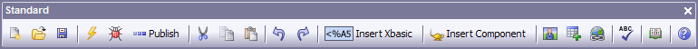

Standard Toolbar
The Standard toolbar contains:

|
Function |
Button |
Description |
|
New |
|
Opens a new blank document in a new tab. |
|
Open |
|
Displays the Open Page dialog. The display is initially filtered to show only .A5W pages, but you can change the filter to display HTML pages, or all files. |
|
Save |
|
Saves the contents of the current tab. If you have not saved the current document, the editor displays the Save As... dialog to define the name, format, and location of the file. |
|
Execute Page |
|
Publishes and previews the page without images in the LivePreview directory. This preview is after Application Server processing. This function is enabled only when the Application Server is running. Refer to Starting and Stopping the Application Server. |
|
Opens the page in the Xbasic Script Debugger. | ||
|
Publish |
Publishes the page to the local webroot. | |
|
Cut |
Removes the selected page elements to the Windows Clipboard. | |
|
Copy |
|
Copies the selected page elements to the Windows Clipboard. |
|
Paste |
|
Pastes the contents of the Windows Clipboard to the cursor location. |
|
Undo |
|
Restores the edit buffer to its state before the last keystrokes. |
|
Redo |
|
Restores the edit buffer to its state before an Undo operation. |
|
Displays the Insert A5W Code dialog, which allows you to place Xbasic code into the page. | ||
|
|
Displays the Insert Component dialog, which allows you to select and insert a previously created component. | |
|
Displays the Select Image dialog, which allows you to search for images and add them to your page. | ||
|
Insert Table |
|
Displays the Insert Table dialog, which allows you to define table characteristics, then inserts the table at the cursor location. |
|
Displays the Hyperlink dialog. The dialog inserts the hyperlink URL and its description with the following HTML code: <a href="URL">URL_Description</a>. | ||
|
Check Spelling |
|
Displays the Spell Check dialog, which supports interactive spell checking of the contents of the edit buffer. |
|
Hides and displays the Code Library toolbar. | ||
|
Help |
Displays Help |
Limitations
Web publishing applications only.
See Also